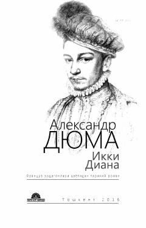

IDXVI asr Fransiyasida ikki Diyana taqdiri kesishgan tarixiy sarguzasht romani.
Aleksandr Dyumaning 'Ikki Diana' romani XVI asr Fransiya tarixidagi dramatik voqealarni tasvirlaydi. Romanda Diyana de Kastro va Diyana de Puatye obrazlari, saroy fitналари, katoliklar va protestantlar o'rtasidagi diniy ziddiyatlar, shuningdek, Gabriyel Montgomeri va Giz gersogi kabi qahramonlarning taqdiri yoritilgan. Asar rus tilidan Rustamjon Ummatov tomonidan tarjima qilingan.